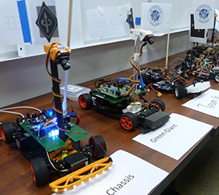

The UC San Diego Autonomous Airplane Team designs, builds, tests and flies our own autonomous flying vehicle. We design our system from the ground up, do our own engineering, and fabricate the final product ourselves. We find our own sponsors, manage our own resources, and conduct our own public relations. Our test pilots are students or professional volunteers. Student designed. Student built. Student competition.
Grand PrIEEE is an undergraduate design competition hosted by UC San Diego, based on UC Davis's Natcar competition. Teams of undergraduate students design, build, and race an autonomous car which must follow a track marked by 1-inch white tape on dark-colored carpet. Under the tape, there is a wire carrying a 100mA rms 75kHz sinusoidal signal. The fastest cars travel at speeds up to 10ft/s.